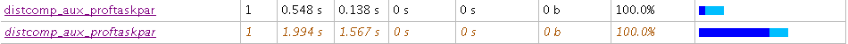
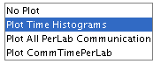
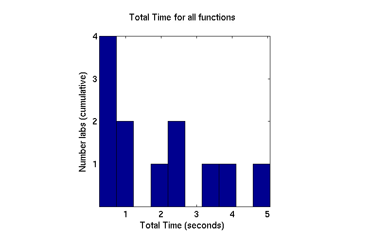

Profiling Parallel Work Distribution
This demo covers an embarrassingly parallel example with uneven work distribution using for drange. The for drange splits iterations equally. As a result it can do suboptimal load balancing, which is visible using the parallel profiler. The procedures described here are also applicable to other work distribution problems.
Contents
Prerequisites:
- Interactive Parallel Mode in Parallel Computing Toolbox™ (See pmode in the user's guide.)
- Using the Parallel Profiler in Pmode
The plots in this demo are produced from a 12-node MATLAB® cluster. If not otherwise specified, everything else is shown running under a 4-node local scheduler. In particular, all text output is from a local scheduler.
This demo uses an example with for drange to illustrate how you use the profiler to observe suboptimal load distribution. Let's look at this embarrassingly parallel for drange loop.
The Algorithm
The objective in the pctdemo_aux_proftaskpar example is to calculate the eig of a random matrix of increasing size, and pick the maximum value from the resulting vector. The crucial issue is the increasing matrix size based on the loop counter ii. Here is the basic iteration:
v(ii) = max( abs( eig( rand(ii) ) ) );
The actual for loop can be seen in the example code.
The code for this example can be found in pctdemo_aux_proftaskpar.
Enabling the Parallel Profiler's Data Collection
A good practice is to reset the parallel profiler on the cluster before turning on mpiprofile in pmode. It makes sure the data is cleared and the profiler is off and in default -messagedetail setting.
P>> mpiprofile reset; P>> mpiprofile on;
Inside a for drange there cannot be any communication between labs so the -messagedetail can be set to simplified (see help mpiprofile). If you do not specify the -messagedetail option and you run a program with no communication, you get 0s in the communication fields.
P>> v = zeros( 1, 300, codistributor() );
P>> tic;pctdemo_aux_proftaskpar('drange');toc;
1 Start of for-drange loop.
The computational complexity increases with the loop index.
Done
Elapsed time is 0.718183 seconds.2 Start of for-drange loop.
The computational complexity increases with the loop index.
Done
Elapsed time is 2.083491 seconds.3 Start of for-drange loop.
The computational complexity increases with the loop index.
Done
Elapsed time is 6.487598 seconds.4 Start of for-drange loop.
The computational complexity increases with the loop index.
Done
Elapsed time is 12.927539 seconds.In this algorithm the elapsed time should always be longest on the last lab. We use tic toc here so that we can compare the longest running time to a parfor. The use of profiling inside a parfor loop with mpiprofile is currently not supported.
Running the Parallel Profiler Graphical Interface
To get the profiler interface, simply type mpiprofile viewer in pmode. You can also view data from a parallel job. See the help or documentation for information on how to do this.
P>> mpiprofile viewer; % The viewer action also turns off the profiler
1 Sending pmode lab2client to the MATLAB client for asynchronous evaluation.
When the profiler interface opens, by default the Function Summary Report is shown for lab 1. Click Compare max vs min TotalTime to see the difference in work distribution between the first and last lab for all the functions called. Look at the pctdemo_aux_proftaskpar function:

Observing Uneven Work Distribution
Here are a few steps for spotting uneven work distribution on the MATLAB workers. Uneven work distribution almost certainly prevents optimal speedup of serial algorithms.
- Select max Time Aggregate from the Manual Comparison Selection listbox (see Using the Parallel Profiler in Pmode). With this selection you can observe the effective total time for a parallel program.
- Click Compare max vs. min TotalTime. As you can see, this loop takes much longer on the last MATLAB worker compared to the first one. The for drange is clearly not distributing the work correctly, at least on these two labs. To confirm this is true for all the labs, you can use the histogram feature of the Plot View page. Before doing so, click the pctdemo_aux_proftaskpar function to get more specific plots.
- Click Plot Time Histograms to see how the computation time was distributed on the four local labs. Observe the total execution time histogram.
In the top figure of this page, only the first few labs take approximately the same amount of time; the others take significantly longer. This large difference in the total time distribution is an indicator of suboptimal load balancing.


Using Parfor for Better Work Distribution
Optimal performance for this type of parallelism requires manual distribution of the iterations in pmode or the use of parfor with matlabpool. To get better work distribution (with pmode) in this type of a problem, you need to create a random distribution of the tasks rather than rely on for drange to statically partition the iterations.
Using parfor is generally better suited to this type of task. With the parfor (i=n:N) construct you get dynamic work distribution which splits the iterations at execution time, across all labs. Thus the cluster is better utilized. You can see this by running the same function outside of pmode using a parfor construct. This results in significantly higher speedup compared to the for drange.
To try this with parfor, run the following commands on the MATLAB client outside of pmode.
pmode close;
matlabpool;
tic;pctdemo_aux_proftaskpar('parfor');toc;
You should get an output that looks like: Done Elapsed time is 6.376887 seconds.
There is a significant speedup (it's nearly two times faster on the 4-node cluster) using parfor instead of for drange, with no change to the actual algorithm. Note that parfor operates as a standard for loop inside of pmode. Please ensure you try parfor outside of pmode to get the speedup. See help for matlabpool and parfor.
Parallelizing Serial for Loops
To make a serial (iteration independent) for-loop parallel you need to add the drange option when inside a parallel job, or replace for with a parfor. The parfor loop will only work as intended with matlabpool. You can view the different styles of for loop parallelism in the example code shown in this demo. See pctdemo_aux_proftaskpar. The parfor version is under the case 'parfor' and the drange version is under the case 'drange'.